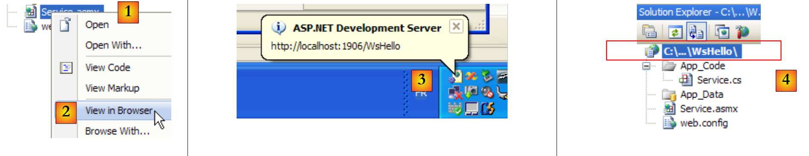
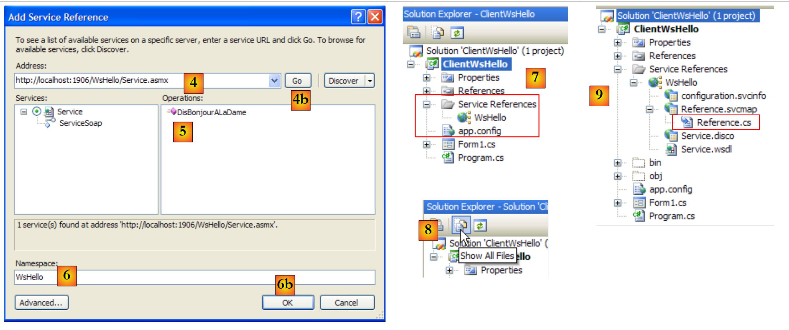
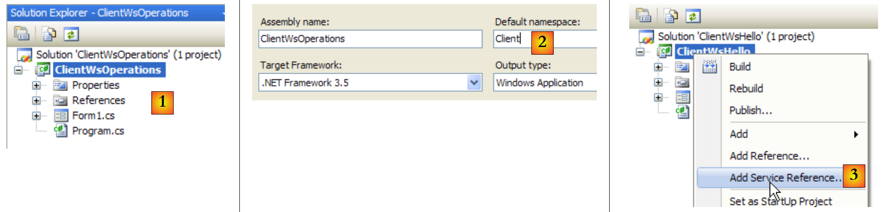
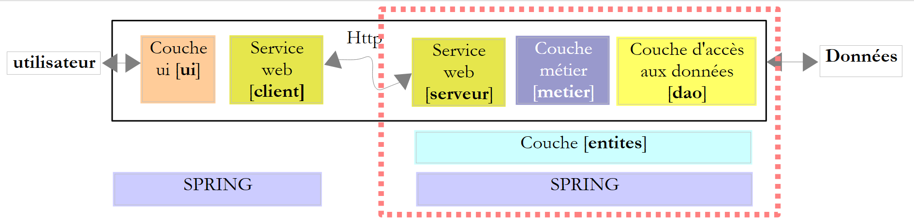
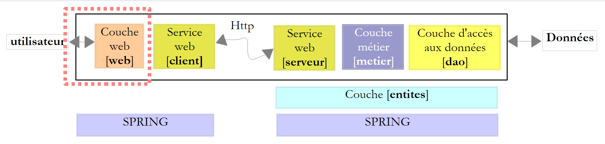
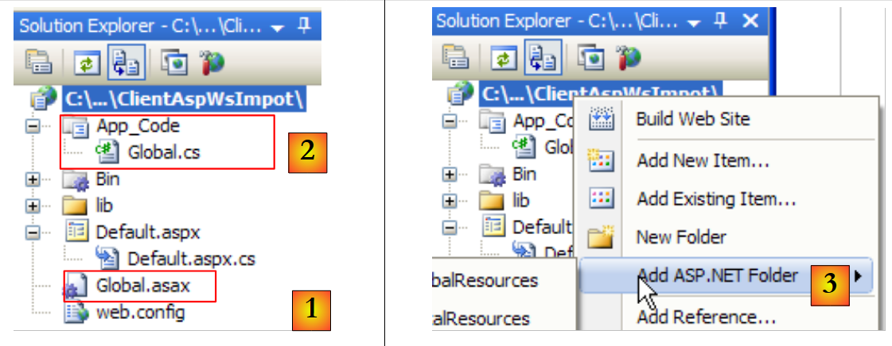
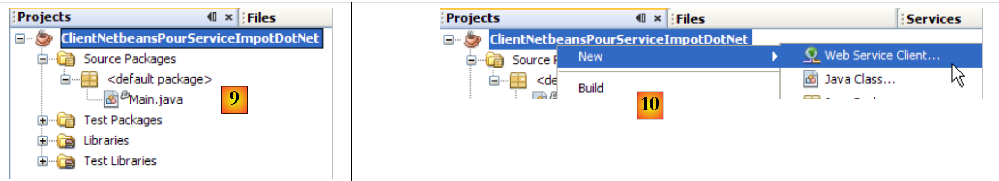
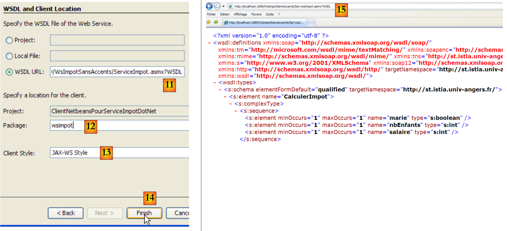
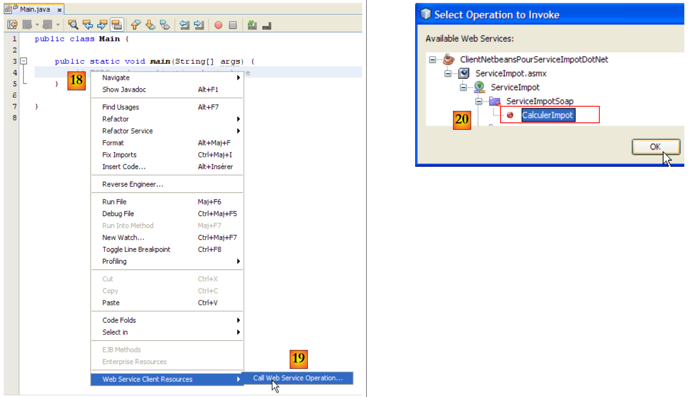

12. Serviços Web
12.1. Introduction
No capítulo anterior, apresentámos várias aplicações cliente-servidor TCP/IP. Na medida em que os clientes e o servidor trocam linhas de texto, podem ser escritos em qualquer linguagem. O cliente deve simplesmente conhecer o protocolo de comunicação esperado pelo servidor.
Os serviços Web são também aplicações de servidor TCP/IP. Apresentam as seguintes características:
- São alojados em servidores Web e o protocolo de comunicação cliente-servidor é o HTTP (HyperText Transport Protocol), um protocolo que se sobrepõe ao TCP-IP.
- O serviço Web possui um protocolo de comunicação padrão, independentemente do serviço prestado. Um serviço Web oferece diversos serviços: S1, S2, …, Sn. Cada um deles aguarda parâmetros fornecidos pelo cliente e devolve-lhe um resultado. Para cada serviço, o cliente precisa de saber:
- o nome exato do serviço, se
- a lista de parâmetros que deve fornecer e o respetivo tipo
- o tipo de resultado devolvido pelo serviço
Uma vez conhecidos estes elementos, o diálogo cliente-servidor segue o mesmo formato, independentemente do serviço web consultado. A programação dos clientes é, assim, padronizada.
- Por razões de segurança face a ataques provenientes da Internet, muitas organizações dispõem de redes privadas e apenas abrem na Internet determinadas portas dos seus servidores: essencialmente a porta 80 do serviço web. Todas as outras portas estão bloqueadas. Assim, as aplicações cliente-servidor, tal como apresentadas no capítulo anterior, são construídas no seio da rede privada (intranet) e, em geral, não são acessíveis a partir do exterior. Alojar um serviço num servidor web torna-o acessível a toda a comunidade da Internet.
- O serviço Web pode ser modelado como um objeto remoto. Os serviços oferecidos tornam-se, assim, métodos desse objeto. Um cliente pode aceder a esse objeto remoto como se fosse local. Isto oculta toda a parte da comunicação de rede e permite construir um cliente independente dessa camada. Se esta vier a mudar, o cliente não precisa de ser alterado.
- Tal como nas aplicações cliente-servidor TCP/IP apresentadas no capítulo anterior, o cliente e o servidor podem ser escritos em qualquer linguagem de programação. Trocam linhas de texto. Estas incluem duas partes:
- os cabeçalhos necessários ao protocolo HTTP
- o corpo da mensagem. No caso de uma resposta do servidor ao cliente, este apresenta o formato XML (eXtensible Markup Language). No caso de um pedido do cliente ao servidor, o corpo da mensagem pode assumir várias formas, incluindo XML. A solicitação XML do cliente pode ter um formato específico denominado SOAP (Simple Object Access Protocol). Neste caso, a resposta do servidor segue também o formato SOAP.
A arquitetura de uma aplicação cliente/servidor baseada num serviço web é a seguinte:
 |
Trata-se de uma extensão da arquitetura de três camadas, à qual se adicionam classes de comunicação de rede especializadas. Já nos deparámos com uma arquitetura semelhante no caso da aplicação cliente gráfica Windows/servidor TCP de impostos, no parágrafo 11.9.1.
Vamos explicar estes conceitos gerais com um primeiro exemplo.
12.2. Um primeiro serviço web com o Visual Web Developer
Vamos construir uma primeira aplicação cliente/servidor com a seguinte arquitetura simplificada:
 |
12.2.1. A parte do servidor
Já referimos que um serviço web é alojado por um servidor web. A criação de um serviço web insere-se no âmbito geral da programação web, do lado do servidor. Anteriormente, tivemos a oportunidade de criar clientes web, o que também se enquadra na programação web, mas, desta vez, do lado do cliente. O termo «programação web» refere-se, na maioria das vezes, à programação do lado do servidor, em vez da programação do lado do cliente. Para desenvolver serviços web ou, de forma mais geral, aplicações web, o Visual C# não é a ferramenta adequada. Vamos utilizar o Visual Developer, uma das versões Express do Visual Studio 2008, que pode ser descarregada em [2] no endereço [1]: [http://msdn.microsoft.com/fr-fr/express/future/bb421473(en-us).aspx] (maio de 2008):
 |
- [1]: o endereço de download
- [2]: o separador «Transferências»
- [3]: descarregar o Visual Developer 2008
Para criar um primeiro serviço web, pode-se proceder da seguinte forma, após iniciar o Visual Developer:
 |
- [1]: selecionar a opção «Ficheiro / Novo Site Web»
- [2]: selecionar um tipo de aplicação ASP.NET Serviço Web
- [3]: selecionar a linguagem de desenvolvimento: C#
- [4]: indicar a pasta onde criar o projeto
 |
- [5]: o projeto criado no Visual Web Developer
- [6]: a pasta do projeto no disco
Uma aplicação web está estruturada da seguinte forma no Web Developer:
- uma raiz onde se encontram os documentos do site (páginas web estáticas HTML, imagens, páginas web dinâmicas .aspx, serviços web .asmx, ...). Nesta raiz encontra-se também o ficheiro [web.config], que é o ficheiro de configuração da aplicação web. Desempenha a mesma função que o ficheiro [App.config] das aplicações Windows e está estruturado da mesma forma.
- uma pasta [App_Code], na qual se encontram as classes e interfaces do site web destinadas a serem compiladas.
- uma pasta [App_Data], na qual serão colocados os dados utilizados pelas classes de [App_Code]. Por exemplo, poderá encontrar-se aí uma base de dados SQL Server *.mdf.
[Service.asmx] é o serviço web cuja criação solicitámos. Contém apenas a seguinte linha:
<%@ WebService Language="C#" CodeBehind="~/App_Code/Service.cs" Class="Service" %>
O código-fonte acima destina-se ao servidor Web que irá alojar a aplicação. Em modo de produção, este servidor é geralmente o IIS (Internet Information Server), o servidor Web da Microsoft. O Visual Web Developer inclui um servidor Web leve que é utilizado em modo de desenvolvimento. A diretiva anterior indica ao servidor Web:
- [Service.asmx] é um serviço Web (diretiva WebService)
- escrito em C# (atributo Language)
- que o código C# do serviço Web se encontra no ficheiro [~/App_Code/Service.cs] (atributo CodeBehind). É aí que o servidor Web irá procurá-lo para o compilar.
- que a classe que implementa o serviço web chama-se Service (atributo Class)
O código C# [Service.cs] do serviço web gerado pelo Visual Developer é o seguinte:
using System.Web.Services;
[WebService(Namespace = "http://tempuri.org/")]
[WebServiceBinding(ConformsTo = WsiProfiles.BasicProfile1_1)]
// Para permitir que este serviço Web seja chamado a partir de um script, utilizando ASP.NET AJAX, remova o comentário da seguinte linha.
// [System.Web.Script.Services.ScriptService]
public class Service : System.Web.Services.WebService
{
public Service () {
//Descomente a seguinte linha se estiver a utilizar componentes concebidos
//InitializeComponent();
}
[WebMethod]
public string HelloWorld() {
return "Hello World";
}
}
A classe Service assemelha-se a uma classe C# clássica, mas com alguns pontos a destacar:
- linha 7: a classe deriva da classe WebService definida no espaço de nomes System.Web.Services. Esta herança nem sempre é obrigatória. Neste exemplo, em particular, seria possível prescindir dela.
- linha 3: a própria classe é precedida por um atributo [WebService(Namespace="http://tempuri.org/")] destinado a atribuir um espaço de nomes ao serviço web. Um fornecedor de classes atribui um espaço de nomes às suas classes para lhes conferir um nome único e, assim, evitar conflitos com classes de outros fornecedores que possam ter o mesmo nome. No caso dos serviços web, o princípio é o mesmo. Cada serviço web deve poder ser identificado por um nome único, neste caso, http://tempuri.org/. Este nome pode ser qualquer um. Não tem necessariamente a forma de uma URI HTTP.
- linha 15: o método HelloWorld é precedido por um atributo [WebMethod] que indica ao compilador que o método deve ser tornado visível aos clientes remotos do serviço Web. Um método que não seja precedido por este atributo não é visível para os clientes do serviço web. Pode tratar-se de um método interno utilizado por outros métodos, mas que não se destina a ser publicado.
- linha 9: o construtor do serviço web. É desnecessário na nossa aplicação.
A classe [Service.cs] gerada é transformada da seguinte forma:
using System.Web.Services;
[WebService(Namespace = "http://st.istia.univ-angers.fr")]
[WebServiceBinding(ConformsTo = WsiProfiles.BasicProfile1_1)]
public class Service : System.Web.Services.WebService
{
[WebMethod]
public string DisBonjourALaDame(string nomDeLaDame) {
return string.Format("Bonjour Mme {0}", nomDeLaDame);
}
}
O ficheiro de configuração [web.config] gerado para a aplicação web é o seguinte:
<?xml version="1.0"?>
<!--
Note: As an alternative to hand editing this file you can use the
web admin tool to configure settings for your application. Use
the Website->Asp.Net Configuration option in Visual Studio.
A full list of settings and comments can be found in
machine.config.comments usually located in
\Windows\Microsoft.Net\Framework\v2.x\Config
-->
<configuration>
<configSections>
<sectionGroup name="system.web.extensions" type="System.Web.Configuration.SystemWebExtensionsSectionGroup, System.Web.Extensions, Version=3.5.0.0, Culture=neutral, PublicKeyToken=31BF3856AD364E35">
...
</sectionGroup>
</configSections>
<appSettings/>
<connectionStrings/>
...
</configuration>
O ficheiro tem 140 linhas. É complexo e não o iremos comentar. Vamos mantê-lo tal como está. Acima, encontramos as balizas <configuration>, <configSections>, <sectionGroup>, <appSettings>, <connectionString>, que já encontrámos no ficheiro [App.config] das aplicações Windows.
Temos um serviço web operacional que pode ser executado:
 |
- [1,2]: clica-se com o botão direito do rato em [Service.asmx] e solicita-se a visualização da página num navegador
- [3]: O Visual Web Developer inicia o seu servidor web integrado e coloca o ícone deste no canto inferior direito da barra de tarefas. O servidor web é iniciado numa porta aleatória, neste caso a 1906. O URI apresentado /WsHello é o nome do site [4].
O Visual Web Developer também iniciou um navegador para apresentar a página solicitada, nomeadamente [Service.asmx]:
 |
- em [1], o URI da página. Encontramos o URI do site [http://localhost:1906/WsHello] seguido do da página /Service.asmx.
- em [2], o sufixo .asmx indicou ao servidor web que não se tratava de uma página web normal (sufixo .aspx) que dá origem a uma página HTML, mas sim da página de um serviço web. Em seguida, gera automaticamente uma página web que apresenta um link para cada um dos métodos do serviço web com o atributo [WebMethod]. Estes links permitem testar os métodos.
Ao clicar no link [2] acima, somos redirecionados para a seguinte página:
 |
- em [1], repare-se na URI [http://localhost:1906/WsHello/Service.asmx?op=DisBonjourALaDame] da nova página. Esta é a URI do serviço web com um parâmetro op=M, em que M é o nome de um dos métodos do serviço web.
- Recorde-se a assinatura do método [DisBonjourALaDame]:
public string DisBonjourALaDame(string nomDeLaDame) ;
O método aceita um parâmetro do tipo string e devolve um resultado do tipo string. A página permite-nos executar o método [DisBonjourALaDame]: em [2], introduzimos o valor do parâmetro nomDeLaDame e, em [3], solicitamos a execução do método. Obtemos o seguinte resultado:
 |
- em [1], note-se que a URI da resposta não é idêntica à da solicitação. Esta foi alterada.
- em [2], a resposta do servidor web. Observem-se os seguintes pontos:
- trata-se de uma resposta XML e não de HTML
- o resultado do método [DisBonjourALaDame] está encapsulado numa baliza <string> que representa o seu tipo.
- a baliza <string> tem um atributo xmlns (espaço de nomes XML), que é o espaço de nomes que atribuímos ao nosso serviço web (linha 1 abaixo).
[WebService(Namespace = "http://st.istia.univ-angers.fr")]
[WebServiceBinding(ConformsTo = WsiProfiles.BasicProfile1_1)]
public class Service : System.Web.Services.WebService
Para saber como o navegador efetuou o seu pedido, é necessário consultar o código HTML do formulário de teste:
- linha 11: os valores do formulário (tag form) serão enviados (atributo method) para a URL [ http://localhost:1906/WsHello/Service.asmx/DisBonjourALaDame] (atributo action).
- linha 19: o campo de introdução de dados chama-se nomDeLaDame (atributo name).
Solicitar a execução do serviço web [/Service.asmx] permitiu-nos testar os seus métodos e obter uma compreensão básica das trocas entre cliente e servidor.
12.2.2. A parte do cliente
 |
É possível implementar o cliente do serviço web remoto acima referido com um cliente TCP/IP básico. Eis, por exemplo, o diálogo cliente/servidor realizado com um cliente putty ligado ao serviço web remoto (localhost,1906):
- linhas 1-5: mensagens enviadas pelo cliente putty
- linha 1: comando POST
- linhas 6-10: resposta do servidor. Significa que o cliente pode enviar os valores do POST.
- linha 11: os valores enviados no formato param1=val1¶m2=val2& .... Alguns caracteres têm de ser caracteres aceitáveis numa URL. É o que anteriormente designámos por URL codificada. Aqui, o formulário tem apenas um único parâmetro denominado nomDeLaDame. O valor enviado tem, no total, 23 caracteres. Este tamanho deve ser declarado no cabeçalho HTTP da linha 4.
- linhas 12-22: a resposta do servidor
- linha 22: o resultado do método web [DisBonjourALaDame].
Com o Visual C#, é possível gerar, com a ajuda de um assistente, o cliente de um serviço web remoto. É isso que vamos ver agora.
 |
A camada [1] acima é implementada por um projeto do Visual Studio C# do tipo «Aplicação Windows» e denominado ClientWsHello:
 |
- em [1], o projeto ClientWsHello no Visual C#
- em [2], o espaço de nomes predefinido do projeto será Client (clique com o botão direito do rato no projeto / Propriedades / Aplicação). Este espaço de nomes servirá para construir o espaço de nomes do cliente que será gerado.
- No [3], clique com o botão direito do rato no projeto para lhe adicionar uma referência a um serviço web remoto
 |
- em [4], introduza o URI do serviço web criado anteriormente
- no [4b], ligue o Visual C# ao serviço web indicado pelo [4]. O Visual C# irá recuperar a descrição do serviço web e, graças a essa descrição, poderá gerar um cliente.
- em [5], uma vez recuperada a descrição do serviço web, o Visual C# pode apresentar os seus métodos públicos
- Em [6], indique um espaço de nomes para o cliente que vai ser gerado. Este será adicionado ao espaço de nomes definido em [2]. Assim, o espaço de nomes do cliente será Client.WsHello.
- No [6b], confirme o assistente.
- Em [7], a referência ao serviço web WsHello aparece no projeto. Além disso, foi criado um ficheiro de configuração [app.config].
- No [8], visualize todos os ficheiros do projeto.
- No [9], a referência ao serviço web WsHello contém vários ficheiros que não iremos explicar em pormenor. No entanto, vamos dar uma vista de olhos ao ficheiro [Reference.cs], que é o código C# do cliente gerado:
namespace Client.WsHello {
...
public partial class ServiceSoapClient : System.ServiceModel.ClientBase<Client.WsHello.ServiceSoap>, Client.WsHello.ServiceSoap {
public ServiceSoapClient() {
}
...
public string DisBonjourALaDame(string nomDeLaDame) {
Client.WsHello.DisBonjourALaDameRequest inValue = new Client.WsHello.DisBonjourALaDameRequest();
inValue.Body = new Client.WsHello.DisBonjourALaDameRequestBody();
inValue.Body.nomDeLaDame = nomDeLaDame;
Client.WsHello.DisBonjourALaDameResponse retVal = ((Client.WsHello.ServiceSoap)(this)).DisBonjourALaDame(inValue);
return retVal.Body.DisBonjourALaDameResult;
}
}
}
- linha 1: o espaço de nomes do cliente gerado é Client.WsHello. Se pretender alterar este espaço de nomes, é aqui que deve fazê-lo.
- linha 3: a classe ServiceSoapClient é a classe do cliente gerado. Trata-se de uma classe proxy, no sentido em que irá ocultar à aplicação Windows o facto de estar a ser utilizado um serviço web remoto. A aplicação Windows irá utilizar a classe remota WsHello através da classe local Client.WsHello.ServiceSoapClient. Para criar uma instância do cliente, utilizar-se-á o construtor da linha 5:
- linha 8: o método DisBonjourALaDame é o equivalente, do lado do cliente, do método DisBonjourALaDame do serviço web. A aplicação Windows utilizará o método remoto DisBonjourALaDame através do método local Client.WsHello.ServiceSoapClient.DisBonjourALaDame da seguinte forma:
O ficheiro [app.config] gerado é o seguinte:
<?xml version="1.0" encoding="utf-8" ?>
<configuration>
<system.serviceModel>
<bindings>
....
</bindings>
<client>
<endpoint address="http://localhost:1906/WsHello/Service.asmx"... />
</client>
</system.serviceModel>
</configuration>
Deste ficheiro, apenas consideraremos a linha 8, que contém o URI do serviço web. Se este URI mudar, não é necessário reconstruir o cliente Windows. Basta alterar o URI do ficheiro [app.config].
Voltemos à arquitetura da aplicação Windows que pretendemos construir:
 |
Construímos a camada [client] do serviço web. A camada [ui] será a seguinte:
 |
n.º | tipo | nome | função |
1 | TextBox | textBoxNomDame | nome da senhora |
2 | Button | buttonSalutations | para se ligar ao serviço web remoto WsHello e interrogar o método DisBonjourALaDame. |
3 | Rótulo | labelBonjour | o resultado devolvido pelo serviço web |
O código do formulário [Form1.cs] é o seguinte:
using System;
using System.Windows.Forms;
using Client.WsHello;
namespace ClientSalutations {
public partial class Form1 : Form {
public Form1() {
InitializeComponent();
}
private void buttonSalutations_Click(object sender, EventArgs e) {
// ampulheta
Cursor=Cursors.WaitCursor;
// consulta ao serviço web
labelBonjour.Text = new ServiceSoapClient().DisBonjourALaDame(textBoxNomDame.Text.Trim());
// cursor normal
Cursor = Cursors.Arrow;
}
}
}
- linha 15: o cliente do serviço web é instanciado. É do tipo Client.WsHello.ServiceSoapClient. O espaço de nomes Client.WsHello é declarado na linha 3. É chamado o método local ServiceSoapClient().DisBonjourALaDame. Sabe-se que este, por sua vez, interroga o método remoto com o mesmo nome do serviço web.
12.3. Um serviço web de operações aritméticas
Vamos construir uma segunda aplicação cliente/servidor com, mais uma vez, a seguinte arquitetura simplificada:
 |
O serviço web anterior oferecia um único método. Vamos considerar um serviço web que irá oferecer as quatro operações aritméticas:
- adicionar(a,b), que devolverá a+b
- subtrair(a,b), que devolverá a-b
- multiplicar(a,b), que devolverá a*b
- dividir(a,b), que devolverá a/b
e que será consultado através da seguinte interface gráfica:
 |
- em [1], a operação a realizar
- em [2,3]: os operandos
- em [4], o botão para chamar o serviço web
- em [5], o resultado devolvido pelo serviço web
12.3.1. A parte do servidor
Estamos a desenvolver um projeto do tipo serviço web com o Visual Web Developer:
 |
- em [1], a aplicação web WsOperations gerada
- No [2], a aplicação web WsOperations foi redesenhada da seguinte forma:
- a página web [Service.asmx] foi renomeada para [Operations.asmx]
- a classe [Service.cs] foi renomeada para [Operations.cs]
- o ficheiro [web.config] foi eliminado para demonstrar que não é indispensável.
A página web [Service.asmx] contém a seguinte linha:
<%@ WebService Language="C#" CodeBehind="~/App_Code/Operations.cs" Class="Operations" %>
O serviço web é assegurado pela seguinte classe [Operations.cs]:
using System.Web.Services;
[WebService(Namespace = "http://st.istia.univ-angers.fr/")]
[WebServiceBinding(ConformsTo = WsiProfiles.BasicProfile1_1)]
public class Operations : System.Web.Services.WebService
{
[WebMethod]
public double Ajouter(double a, double b)
{
return a + b;
}
[WebMethod]
public double Soustraire(double a, double b)
{
return a - b;
}
[WebMethod]
public double Multiplier(double a, double b)
{
return a * b;
}
[WebMethod]
public double Diviser(double a, double b)
{
return a / b;
}
}
Para colocar o serviço web online, procedemos conforme indicado em [3]. Obtemos então a página de teste dos 4 métodos do serviço web WsOperations:

Convidamos o leitor a testar os 4 métodos.
12.3.2. A parte do cliente
 |
Com o Visual C#, criamos uma aplicação Windows ClientWsOperations:
 |
- em [1], o projeto ClientWsOperations no Visual C#
- em [2], o espaço de nomes predefinido do projeto será Client (clique com o botão direito do rato no projeto / Propriedades / Aplicação). Este espaço de nomes servirá para construir o espaço de nomes do cliente que será gerado.
- no [3], clique com o botão direito do rato no projeto para lhe adicionar uma referência a um serviço web existente
 |
- no [4], introduza o URI do serviço web criado anteriormente. Para tal, é necessário verificar o que está apresentado no campo de endereço do navegador que exibe a página de teste do serviço web.
- em [4b], ligue o Visual C# ao serviço web indicado por [4]. O Visual C# irá recuperar a descrição do serviço web e, graças a essa descrição, poderá gerar um cliente.
- Em [5], assim que a descrição do serviço web for recuperada, o Visual C# pode apresentar os métodos públicos
- em [6], indicar um espaço de nomes para o cliente que vai ser gerado. Este será adicionado ao espaço de nomes definido em [2]. Assim, o espaço de nomes do cliente será Client.WsOperations.
- Em [6b], confirme o assistente.
- Em [7], a referência ao serviço web WsOperations aparece no projeto. Além disso, foi criado um ficheiro de configuração [app.config].
Recorde-se que o cliente gerado é do tipo Client.WsOperations.OperationsSoapClient, em que
- Client.WsOperations é o espaço de nomes do cliente do serviço web
- Operations é a classe do serviço web remoto.
Embora exista uma forma lógica de construir este nome, muitas vezes é mais simples encontrá-lo no ficheiro [Reference.cs], que é um ficheiro oculto por predefinição. O seu conteúdo é o seguinte:
namespace Client.WsOperations {
...
public partial class OperationsSoapClient : System.ServiceModel.ClientBase<Client.WsOperations.OperationsSoap>, Client.WsOperations.OperationsSoap {
public OperationsSoapClient() {
}
...
public double Ajouter(double a, double b) {
...
}
public double Soustraire(double a, double b) {
...
}
public double Multiplier(double a, double b) {
...
}
public double Diviser(double a, double b) {
...
}
}
}
Os métodos Ajouter, Soustraire, Multiplier, Diviser do serviço web remoto serão acedidos através dos métodos proxy com o mesmo nome (linhas 8, 12, 16, 20) do cliente do tipo Client.WsOperations.OperationsSoapClient (linha 3).
Resta-nos construir a interface gráfica:
 |
n.º | tipo | nome | função |
1 | ComboBox | comboBoxOperations | lista de operações aritméticas |
2 | TextBox | textBoxA | número a |
3 | TextBox | textBoxB | número b |
4 | Botão | buttonExécuter | consulta o serviço web remoto |
5 | Etiqueta | labelRésultat | o resultado da operação |
O código de [Form1.cs] é o seguinte:
using System;
using System.Windows.Forms;
using Client.WsOperations;
namespace ClientWsOperations {
public partial class Form1 : Form {
// tabela de operações
private string[] opérations = { "Ajouter", "Soustraire", "Multiplier", "Diviser" };
// serviço web a contactar
private OperationsSoapClient opérateur = new OperationsSoapClient();
// fabricante
public Form1() {
InitializeComponent();
}
private void Form1_Load(object sender, EventArgs e) {
// preenchimento do menu suspenso das operações
comboBoxOperations.Items.AddRange(opérations);
comboBoxOperations.SelectedIndex = 0;
}
private void buttonExécuter_Click(object sender, EventArgs e) {
// verificação dos parâmetros a e b da operação
textBoxMessage.Text = "";
bool erreur = false;
Double a = 0;
if (!Double.TryParse(textBoxA.Text, out a)) {
textBoxMessage.Text += "Nombre a erroné...";
}
Double b = 0;
if (!Double.TryParse(textBoxB.Text, out b)) {
textBoxMessage.Text += String.Format("{0}Nombre b erroné...", Environment.NewLine);
}
if (erreur) {
return;
}
// execução da operação
Double c=0;
try {
switch (comboBoxOperations.SelectedItem.ToString()) {
case "Ajouter":
c=opérateur.Ajouter(a, b);
break;
case "Soustraire":
c=opérateur.Soustraire(a, b);
break;
case "Multiplier":
c=opérateur.Multiplier(a, b);
break;
case "Diviser":
c=opérateur.Diviser(a, b);
break;
}
// exibição do resultado
labelRésultat.Text = c.ToString();
} catch (Exception ex) {
textBoxMessage.Text = ex.Message;
}
}
}
}
- linha 3: o espaço de nomes do cliente do serviço web remoto
- linha 10: o cliente do serviço web remoto é instanciado em simultâneo com o formulário
- linhas 17-21: a lista suspensa de operações é preenchida durante o carregamento inicial do formulário
- linha 23: execução da operação solicitada pelo utilizador
- linhas 25-37: verifica-se se os valores introduzidos a e b são, de facto, números reais
- linhas 41-54: um switch para executar a operação remota solicitada pelo utilizador
- linhas 43, 46, 49, 52: é o cliente local que é consultado. De forma transparente, este consulta o serviço web remoto.
12.4. Um serviço web de cálculo de impostos
Retomamos a já conhecida aplicação de cálculo de impostos. Da última vez que trabalhámos com ela, transformámo-la num servidor TCP remoto que podia ser acedido através da Internet. Agora, transformamo-la num serviço web.
A arquitetura da versão 8 era a seguinte:
 |
A arquitetura da versão 9 será semelhante:
 |
Trata-se de uma arquitetura semelhante à da versão 8 analisada no parágrafo 11.9.1, mas em que o servidor e o cliente TCP são substituídos por um serviço web e o seu cliente proxy. Vamos retomar na íntegra as camadas [ui], [metier] e [dao] da versão 8.
12.4.1. A parte do servidor
Criamos um projeto do tipo serviço web com o Visual Web Developer:
 |
- em [1], a aplicação web WsImpot gerada
- em [2], a aplicação web WsImpot foi redesenhada da seguinte forma:
- a página web [Service.asmx] foi renomeada para [ServiceImpot.asmx]
- a classe [Service.cs] foi renomeada para [ServiceImpot .cs]
A página web [ServiceImpot.asmx] contém a seguinte linha:
<%@ WebService Language="C#" CodeBehind="~/App_Code/ServiceImpot.cs" Class="ServiceImpot" %>
O serviço web é prestado pela seguinte classe [ServiceImpot.cs]:
using System.Web.Services;
[WebService(Namespace = "http://st.istia.univ-angers.fr/")]
[WebServiceBinding(ConformsTo = WsiProfiles.BasicProfile1_1)]
public class ServiceImpot : System.Web.Services.WebService
{
[WebMethod]
public int CalculerImpot(bool marié, int nbEnfants, int salaire)
{
return 0;
}
}
O serviço web irá expor apenas o método CalculerImpot da linha 9.
Voltemos à arquitetura cliente/servidor da versão 8:
 |
O projeto do Visual Studio do servidor [1] era o seguinte:
 |
- no [1], o projeto. Este continha os seguintes elementos:
- [ServeurImpot.cs]: o servidor TCP/IP de cálculo de impostos sob a forma de uma aplicação de consola.
- [dbimpots.sdf]: a base de dados SQL Server Compact da versão 7, descrita no parágrafo 9.8.5.
- [App.config]: o ficheiro de configuração da aplicação.
- Na pasta [2], a pasta [lib] contém os ficheiros DLL necessários para o projeto:
- [ImpotsV7-dao]: a camada [dao] da versão 7
- [ImpotsV7-metier]: a camada [metier] da versão 7
- [antlr.runtime, CommonLogging, Spring.Core] para o Spring
- em [3], as referências do projeto
As camadas [metier] e [dao] da versão já existem: são as utilizadas nas versões 7 e 8. Estão na forma de DLL, que integramos no projeto da seguinte forma:
 |
- em [1], a pasta [lib] do servidor da versão 8 foi copiada para o projeto do serviço web da versão 9.
- em [2], alteramos as propriedades da página para adicionar os DLL da pasta [lib] e [4] às referências do projeto [3].
Após esta operação, dispomos de todas as camadas necessárias para o servidor [1] abaixo:
 |
Se os elementos do servidor [1], [serveur], [metier], [dao], [entites] e [spring] estiverem todos presentes no projeto do Visual Studio, falta-nos o elemento que irá instanciá-los no arranque da aplicação web. Na versão 8, uma classe principal com o método estático [Main] encarregava-se de instanciar as camadas com a ajuda do Spring. Numa aplicação web, a classe capaz de realizar uma tarefa semelhante é a classe associada ao ficheiro [Global.asax] :
 |
- no [1], adiciona-se um novo elemento ao projeto web
- no [2], seleciona-se o tipo «Global Application Class»
- em [3], o nome proposto por predefinição para este elemento
- em [4], confirma-se a adição
- em [5], o novo elemento foi integrado no projeto
Vejamos o conteúdo do ficheiro [Global.asax]:
<%@ Application Language="C#" %>
<script runat="server">
void Application_Start(object sender, EventArgs e)
{
// Código executado no arranque da aplicação
}
void Application_End(object sender, EventArgs e)
{
// Código executado ao encerrar a aplicação
}
void Application_Error(object sender, EventArgs e)
{
// Código executado quando ocorre um erro não tratado
}
void Session_Start(object sender, EventArgs e)
{
// Código executado quando é iniciada uma nova sessão
}
void Session_End(object sender, EventArgs e)
{
// Código executado quando uma sessão termina.
}
</script>
O ficheiro é uma mistura de tags destinadas ao servidor web (linhas 1, 3, 30) e de código C#. Este método era o único utilizado com o ASP, o antecessor do ASP.NET, que é a tecnologia atual da Microsoft para a programação web. Com o ASP.NET, este método continua a poder ser utilizado, mas não é o método predefinido. O método predefinido é o denominado «CodeBehind», que já encontrámos nas páginas dos serviços web, por exemplo, aqui no [ServiceImpot.asmx]:
<%@ WebService Language="C#" CodeBehind="~/App_Code/ServiceImpot.cs" Class="ServiceImpot" %>
O atributo CodeBehind especifica onde se encontra o código-fonte da página [ServiceImpot.asmx]. Sem este atributo, o código-fonte estaria na página [ServiceImpot.asmx] com uma sintaxe semelhante à encontrada em [Global.asax]. Não iremos manter o ficheiro [Global.asax] tal como foi gerado, mas o seu código permite-nos compreender para que serve:
- a classe associada a Global.asax é instanciada no arranque da aplicação. O seu ciclo de vida corresponde ao da aplicação na sua totalidade. Concretamente, só desaparece quando o servidor web é desligado.
- O método Application_Start é executado em seguida. Esta é a única vez que será executado. Por isso, é utilizado para instanciar objetos partilhados entre todos os utilizadores. Estes objetos são colocados:
- ou em campos estáticos da classe associada a Global.asax. Uma vez que esta classe está permanentemente presente, qualquer utilizador pode consultar as informações nela contidas.
- ou no contentor Application. Este contentor também é criado no arranque da aplicação e a sua duração corresponde à da aplicação.
- Para inserir um dado neste contentor, escreve-se Application["clé"]=valor;
- para o recuperar, escreve-se T valor=(T)Application["clé"]; em que T é o tipo de valeur.
- O método Session_Start é executado sempre que um novo utilizador efetua um pedido. Como se reconhece um novo utilizador? Cada utilizador (na maioria das vezes, um navegador) recebe, no final do seu primeiro pedido, um token de sessão, que é uma cadeia de caracteres única para cada utilizador. Posteriormente, o utilizador reenvia o token de sessão que recebeu em cada nova solicitação que efetua. Isto permite que o servidor web o reconheça. Ao longo das diferentes solicitações de um mesmo utilizador, os dados que lhe são próprios podem ser armazenados no contentor Session:
- para inserir um dado neste contentor, escreve-se Session["clé"]=valor;
- para o recuperar, escreve-se T valor=(T)Session["clé"]; em que T é o tipo de valeur.
A duração de uma sessão está limitada, por predefinição, a 20 minutos de inatividade do utilizador (c.a.d, ou seja, o utilizador não reenviou o seu token de sessão nos últimos 20 minutos).
- O método Application_Error é executado quando uma exceção não gerida pela aplicação web é transmitida ao servidor web.
- Os restantes métodos são utilizados com menos frequência.
Após estas noções gerais, para que nos pode servir o Global.asax? Vamos utilizar o seu método Application_Start para inicializar as camadas [metier], [dao] e [entites] contidas nos DLL e [ImpotsV7-metier, ImpotsV7-dao]. Utilizaremos o Spring para as instanciar. As referências das camadas assim criadas serão, em seguida, armazenadas em campos estáticos da classe associada a Global.asax.
Primeiro passo: transferimos o código C# de Global.asax para uma classe separada. O projeto evolui da seguinte forma:
 |
Em [1], o ficheiro [Global.asax] será associado à classe [Global.cs] [2], contendo apenas a seguinte linha:
<%@ Application Language="C#" Inherits="WsImpot.Global"%>
O atributo Inherits="WsImpot.Global" indica que a classe associada a Global.asax herda da classe WsImpot.Global. Esta classe está definida em [Global.cs] da seguinte forma:
using System;
using Metier;
using Spring.Context.Support;
namespace WsImpot
{
public class Global : System.Web.HttpApplication
{
// camada de negócio
public static IImpotMetier Metier;
// método executado no arranque da aplicação
private void Application_Start(object sender, EventArgs e)
{
// instâncias das camadas [metier] e [dao]
Metier = ContextRegistry.GetContext().GetObject("metier") as IImpotMetier;
}
}
}
- linha 4: o espaço de nomes da classe
- linha 6: a classe Global. Pode dar-lhe o nome que quiser. O importante é que ela derive da classe System.Web.HttpApplication.
- linha 9: um campo estático público que irá conter uma referência à camada [metier].
- linha 12: o método Application_Start, que será executado no arranque da aplicação.
- linha 15: o Spring é utilizado para processar o ficheiro [web.config], no qual irá encontrar os objetos a instanciar para criar as camadas [metier] e [dao]. Não há qualquer diferença entre a utilização do Spring com o ficheiro [App.config] numa aplicação Windows e a utilização do Spring com o ficheiro [web.config] numa aplicação web. Além disso, [web.config] e [App.config] têm a mesma estrutura. A linha 15 armazena a referência da camada [metier] no campo estático da linha 9, para que essa referência esteja disponível para todas as consultas de todos os utilizadores.
O ficheiro [web.config] terá o seguinte conteúdo:
<?xml version="1.0" encoding="utf-8" ?>
<configuration>
<configSections>
<sectionGroup name="spring">
<section name="context" type="Spring.Context.Support.ContextHandler, Spring.Core" />
<section name="objects" type="Spring.Context.Support.DefaultSectionHandler, Spring.Core" />
</sectionGroup>
</configSections>
<spring>
<context>
<resource uri="config://spring/objects" />
</context>
<objects xmlns="http://www.springframework.net">
<object name="dao" type="Dao.DataBaseImpot, ImpotsV7-dao">
<constructor-arg index="0" value="MySql.Data.MySqlClient"/>
<constructor-arg index="1" value="Server=localhost;Database=bdimpots;Uid=admimpots;Pwd=mdpimpots;"/>
<constructor-arg index="2" value="select limite, coeffr, coeffn from tranches"/>
</object>
<object name="metier" type="Metier.ImpotMetier, ImpotsV7-metier">
<constructor-arg index="0" ref="dao"/>
</object>
</objects>
</spring>
</configuration>
Este é o ficheiro [App.config] utilizado na versão 7 da aplicação e analisado no parágrafo 9.8.4.
- linhas 16-20: definem uma camada [dao] que funciona com uma base de dados MySQL5. Esta base de dados foi descrita no parágrafo 9.8.1.
- linhas 21-23: definem a camada [metier]
Voltemos ao quebra-cabeças do servidor:
 |
Ao iniciar a aplicação, as camadas [metier] e [dao] foram instanciadas. O tempo de vida das camadas corresponde ao da própria aplicação. Quando é que o serviço web é instanciado? Na verdade, a cada pedido que lhe é feito. No final da solicitação, o objeto que a atendeu é eliminado. Um serviço web é, portanto, à primeira vista, sem estado. Não pode memorizar informações entre duas solicitações em campos que lhe pertençam. Pode, no entanto, memorizá-las na sessão do utilizador. Para tal, os métodos que expõe devem ser marcados com um atributo especial:
[WebMethod(EnableSession=true)]
public int CalculerImpot(bool marié, int nbEnfants, int salaire)
....
Na linha 1 acima, autoriza-se o método CalculerImpot a aceder ao contentor Session de que falámos anteriormente. Não teremos de utilizar este atributo na nossa aplicação. O serviço web WsImpot será, portanto, instanciado em cada pedido e será sem estado.
Podemos agora escrever o código [ServiceImpot.cs] que implementa o serviço web:
using System.Web.Services;
using WsImpot;
[WebService(Namespace = "http://st.istia.univ-angers.fr/")]
[WebServiceBinding(ConformsTo = WsiProfiles.BasicProfile1_1)]
public class ServiceImpot : System.Web.Services.WebService
{
[WebMethod]
public int CalculerImpot(bool marié, int nbEnfants, int salaire)
{
return Global.Metier.CalculerImpot(marié, nbEnfants, salaire);
}
}
- linha 10: o único método do serviço web
- linha 12: utiliza-se o método CalculerImpot da camada [metier]. Encontra-se uma referência a esta camada no campo estático Metier da classe Global. Esta pertence ao espaço de nomes WsImpot (linha 2).
Estamos prontos para iniciar o serviço web. Antes disso, é necessário iniciar o SGBD e o MySQL5 para que a base de dados bdimpots fique acessível. Feito isto, iniciamos o serviço web [1]:
 |
O navegador apresenta então a página [2]. Seguimos o link:
 |
Atribuímos um valor a cada um dos três parâmetros do método CalculerImpot e solicitamos a execução do método. Obtemos o seguinte resultado, que está correto:

12.4.2. Um cliente gráfico do Windows para o serviço web remoto
Agora que o serviço web foi escrito, passamos ao cliente. Voltemos à arquitetura da aplicação cliente/servidor:
 |
Temos de escrever o cliente [2]. A interface gráfica será idêntica à da versão 8:
 |
Para desenvolver a parte [client] da versão 9, vamos partir da parte [client] da versão 8 e, em seguida, introduziremos as alterações necessárias. Duplicamos o projeto do Visual Studio analisado no parágrafo 11.9.4.1, renomeamo-lo para ClientWsImpot e carregamo-lo no Visual Studio:
 |
A solução do Visual Studio da versão 8 era composta por dois projetos:
- o projeto [metier] [1], que era um cliente TCP do servidor TCP de cálculo de impostos
- o projeto [ui] [2] da interface gráfica.
As alterações a efetuar são as seguintes:
- o projeto [metier] deve passar a ser o cliente de um serviço web
- o projeto [ui] deve referenciar o DLL da nova camada [metier]
- a configuração da camada [metier] na [App.config] deve ser alterada.
12.4.2.1. A nova camada [metier]
 |
- em [1], IImpotMetier é a interface da camada [metier] e ImpotMetierTcp é a sua implementação por um cliente TCP
- em [2], eliminamos a implementação ImpotMetierTcp. Temos de criar outra implementação da interface IImpotMetier, que será cliente de um serviço web.
- Em [3], designamos Client como o espaço de nomes predefinido do projeto [metier]. O DLL que será gerado passará a chamar-se [ImpotsV9-metier.dll].
 |
- em [4], criamos uma referência ao serviço web WsImpot.
- em [5], configuramo-lo e validamo-lo.
- no [6], a referência ao serviço web WsImpot foi criada e foi gerado um ficheiro [app.config].
No ficheiro oculto [Reference.cs]:
- o espaço de nomes é Client.WsImpot
- a classe cliente chama-se ServiceImpotSoapClient
- possui um único método de assinatura:
public int CalculerImpot(bool marié, int nbEnfants, int salaire) ;
Resta-nos implementar a interface IImpotMetier:
namespace Metier {
public interface IImpotMetier {
int CalculerImpot(bool marié, int nbEnfants, int salaire);
}
}
Implementamo-la com a seguinte classe ImpotMetierWs:
using System.Net.Sockets;
using System.IO;
using Client.WsImpot;
namespace Metier {
public class ImpotMetierWs : IImpotMetier {
// cliente do serviço web remoto
private ServiceImpotSoapClient client = new ServiceImpotSoapClient();
// cálculo do imposto
public int CalculerImpot(bool marié, int nbEnfants, int salaire) {
return client.CalculerImpot(marié, nbEnfants, salaire);
}
}
}
- linha 6: a classe ImpotMetierWs implementa a interface IImpotMetier.
- linha 9: ao criar uma instância de ImpotMetierWs, o campo client é inicializado com uma instância de um cliente do serviço web de cálculo de impostos.
- linha 12: o único método da interface IImpotMetier a ser implementado.
- linha 13: utiliza-se o método CalculerImpot do cliente do serviço web remoto de cálculo de impostos. No final, será o método CalculerImpot do serviço web remoto que será consultado.
É possível gerar o DLL do projeto:
 |
- em [1], o projeto [client] no seu estado final
- em [2], geração do DLL do projeto
- em [3], o DLL e o ImpotsV9-metier.dll encontram-se na pasta /bin/Release do projeto.
12.4.2.2. A nova camada [ui]
 |
A camada [client] do cliente já foi escrita. Resta-nos escrever a camada [ui]. Voltemos ao projeto do Visual Studio:
 |
- em [1], o projeto [ui] proveniente da versão 8
- para [2], o DLL ImpotsV8-metier da antiga camada [metier] é substituído pelo DLL ImpotsV9-metier da nova camada
- em [3], a DLL e a ImpotsV9-metier são adicionadas às referências do projeto.
A segunda alteração ocorre no ficheiro [App.config]. É importante lembrar que este ficheiro é utilizado pelo Spring para instanciar a camada [metier]. Como esta foi alterada, a configuração do ficheiro [App.config] tem de ser alterada. Por outro lado, o ficheiro [App.config] deve ter a configuração que permite ligar-se ao serviço web remoto de cálculo de impostos. Esta configuração foi gerada no ficheiro [app.config] do projeto [metier] quando a referência ao serviço web remoto foi adicionada ao mesmo.
O ficheiro [App.config] passa, assim, a ter o seguinte conteúdo:
<?xml version="1.0" encoding="utf-8" ?>
<configuration>
<configSections>
<sectionGroup name="spring">
<section name="context" type="Spring.Context.Support.ContextHandler, Spring.Core" />
<section name="objects" type="Spring.Context.Support.DefaultSectionHandler, Spring.Core" />
</sectionGroup>
</configSections>
<spring>
<context>
<resource uri="config://spring/objects" />
</context>
<objects xmlns="http://www.springframework.net">
<object name="metier" type="Metier.ImpotMetierWs, ImpotsV9-metier">
</object>
</objects>
</spring>
<!-- serviço web -->
<system.serviceModel>
<bindings>
<basicHttpBinding>
<binding name="ServiceImpotSoap" closeTimeout="00:01:00" openTimeout="00:01:00"
receiveTimeout="00:10:00" sendTimeout="00:01:00" allowCookies="false"
bypassProxyOnLocal="false" hostNameComparisonMode="StrongWildcard"
maxBufferSize="65536" maxBufferPoolSize="524288" maxReceivedMessageSize="65536"
messageEncoding="Text" textEncoding="utf-8" transferMode="Buffered"
useDefaultWebProxy="true">
<readerQuotas maxDepth="32" maxStringContentLength="8192" maxArrayLength="16384"
maxBytesPerRead="4096" maxNameTableCharCount="16384" />
<security mode="None">
<transport clientCredentialType="None" proxyCredentialType="None"
realm="" />
<message clientCredentialType="UserName" algorithmSuite="Default" />
</security>
</binding>
</basicHttpBinding>
</bindings>
<client>
<endpoint address="http://localhost:2172/WsImpot/ServiceImpot.asmx"
binding="basicHttpBinding" bindingConfiguration="ServiceImpotSoap"
contract="WsImpot.ServiceImpotSoap" name="ServiceImpotSoap" />
</client>
</system.serviceModel>
</configuration>
- linhas 15-18: o Spring instancia apenas um objeto, a camada [metier]
- linha 16: a camada [metier] é instanciada pela classe [Metier.ImpotMetierWs], que se encontra na DLL ImpotsV9-metier.
- linhas 22-46: a configuração do cliente do serviço web remoto. Trata-se de um copiar/colar do conteúdo do ficheiro [app.config] do projeto [metier].
Estamos prontos. Executamos a aplicação com Ctrl-F5 (o serviço web deve estar em execução, os ficheiros SGBD e MySQL5 devem estar em execução, e a porta indicada na linha 42 acima deve estar correta):
 |
12.5. Um cliente web para o serviço web de cálculo de impostos
Voltemos à arquitetura da aplicação cliente/servidor que acabámos de escrever:
 |
A camada [ui] acima foi implementada por um cliente gráfico do Windows. Vamos agora implementá-la com uma interface web:
 |
Trata-se de uma alteração importante para os utilizadores. Atualmente, a nossa aplicação cliente/servidor, versão 9, pode servir vários clientes em simultâneo. Trata-se de uma melhoria em relação à versão 8, na qual apenas servia um cliente de cada vez. A restrição é que os utilizadores que pretendam utilizar o serviço web de cálculo de impostos têm de ter instalado no seu computador o cliente Windows que criámos. Nesta nova versão, a que chamaremos versão 10, os utilizadores poderão aceder, através do seu navegador, ao serviço web de cálculo de impostos.
Na arquitetura acima:
- o lado do servidor não sofre alterações. Permanece tal como na versão 9.
- Do lado do cliente, a camada [client du service web] não sofre alterações. Foi encapsulada nas camadas DLL e [ImpotsV9-metier]. Vamos reutilizar esta DLL.
- No final, a única alteração consiste em substituir uma interface gráfica do Windows por uma interface web.
Vamos abordar novos conceitos de programação web do lado do servidor. Como o objetivo deste documento não é ensinar programação web, tentaremos explicar o procedimento a seguir, mas sem entrar em pormenores. Haverá, portanto, um lado um pouco «mágico» nesta secção. No entanto, parece-nos interessante seguir este procedimento para mostrar um novo exemplo de arquitetura multicamadas em que uma das camadas é alterada.
A arquitetura da versão 10 é, portanto, a seguinte:
 |
Já dispomos de todas as camadas, exceto a camada [web]. Para compreender melhor o que vai ser feito, precisamos de ser mais precisos quanto à arquitetura do cliente. Esta será a seguinte:
 |
- o utilizador da Web tem no seu navegador um formulário Web
- esse formulário é enviado para o servidor web 1, que o processa através da camada [web]
- a camada [web] necessitará dos serviços do cliente do serviço web remoto, encapsulados em [ImpotsV9-metier.dll].
- O cliente do serviço web remoto comunicará com o servidor web 2, que aloja o serviço web remoto.
- A resposta do serviço web remoto será encaminhada até à camada web do cliente, que a formatará numa página que enviará ao utilizador.
O nosso trabalho aqui é, portanto:
- construir o formulário web que o utilizador verá no seu navegador
- escrever a aplicação web que irá processar o pedido do utilizador e enviar-lhe uma resposta sob a forma de uma nova página web. Esta será, na verdade, a mesma que o formulário, ao qual teremos adicionado o montante do imposto a pagar
- escrever a «glue» que faz com que tudo isto funcione em conjunto.
Tudo isto será feito com a ajuda de um novo site criado com o Visual Web Developer:
 |
- [1]: selecionar a opção «File / New Web Site»
- [2]: escolher um tipo de aplicação «ASP.NET Web Site»
- [3]: selecionar a linguagem de desenvolvimento: C#
- [4]: indicar a pasta onde criar o projeto
 |
- [5]: o projeto criado no Visual Web Developer
- [Default.aspx] é uma página web denominada «página predefinida». É esta que será apresentada se for solicitada a URL http://.../ClientAspImpot sem especificar nenhum documento. É esta página que conterá o formulário de cálculo do imposto que o utilizador verá no seu navegador.
- [Default.aspx.cs] é a classe associada à página, que irá gerar o formulário enviado ao utilizador e, posteriormente, processá-lo quando este o tiver preenchido e validado.
- [web.config] é o ficheiro de configuração da aplicação. Ao contrário das vezes anteriores, vamos mantê-lo.
Se voltarmos à arquitetura que temos de construir:
 |
- [1] será implementado por [Default.aspx]
- O [2] será implementado pelo [Default.aspx.cs]
- [3] será implementada por DLL e [ImpotV9-metier]
Comecemos por implementar a camada [3]. Existem várias etapas:
 |
- em [1], a pasta [lib] do cliente gráfico Windows versão 9 é copiada para a pasta do projeto web [ClientAspWsImpot]. Isto é feito com o Explorador do Windows. Para que esta pasta apareça na solução Web Developer, é necessário atualizar a solução com o botão [2].
- Em seguida, deve adicioná-las às referências do projeto [3,4,5]. As DLL referenciadas são automaticamente copiadas para a pasta /bin do projeto [6].
Agora dispomos das DLL necessárias para o funcionamento do Spring e a camada cliente do serviço Web remoto também está implementada. Embora o código deste esteja presente, a sua configuração ainda está por fazer. Na versão 9, era configurado pelo seguinte ficheiro [App.config]:
<?xml version="1.0" encoding="utf-8" ?>
<configuration>
<configSections>
<sectionGroup name="spring">
<section name="context" type="Spring.Context.Support.ContextHandler, Spring.Core" />
<section name="objects" type="Spring.Context.Support.DefaultSectionHandler, Spring.Core" />
</sectionGroup>
</configSections>
<spring>
<context>
<resource uri="config://spring/objects" />
</context>
<objects xmlns="http://www.springframework.net">
<object name="metier" type="Metier.ImpotMetierWs, ImpotsV9-metier">
</object>
</objects>
</spring>
<!-- serviço web -->
<system.serviceModel>
<bindings>
<basicHttpBinding>
...
</basicHttpBinding>
</bindings>
<client>
<endpoint address="http://localhost:2172/WsImpot/ServiceImpot.asmx"
binding="basicHttpBinding" bindingConfiguration="ServiceImpotSoap"
contract="WsImpot.ServiceImpotSoap" name="ServiceImpotSoap" />
</client>
</system.serviceModel>
</configuration>
Retomamos esta configuração na íntegra e integramo-la no ficheiro [web.config] da seguinte forma:
<?xml version="1.0"?>
<configuration>
<configSections>
<sectionGroup name="system.web.extensions"...>
...
</sectionGroup>
<!-- início da secção Spring -->
<sectionGroup name="spring">
<section name="context" type="Spring.Context.Support.ContextHandler, Spring.Core" />
<section name="objects" type="Spring.Context.Support.DefaultSectionHandler, Spring.Core" />
</sectionGroup>
<!-- fim da secção Spring -->
</configSections>
<!-- início da configuração do Spring -->
<spring>
<context>
<resource uri="config://spring/objects" />
</context>
<objects xmlns="http://www.springframework.net">
<object name="metier" type="Metier.ImpotMetierWs, ImpotsV9-metier">
</object>
</objects>
</spring>
<!-- fim da configuração do Spring -->
<!-- início da configuração do cliente do serviço web remoto -->
<system.serviceModel>
<bindings>
<basicHttpBinding>
...
</basicHttpBinding>
</bindings>
<client>
<endpoint address="http://localhost:2172/WsImpot/ServiceImpot.asmx"
binding="basicHttpBinding" bindingConfiguration="ServiceImpotSoap"
contract="WsImpot.ServiceImpotSoap" name="ServiceImpotSoap" />
</client>
</system.serviceModel>
<!-- fim da configuração do cliente do serviço web remoto -->
<!-- outras configurações já presentes no web.config gerado -->
...
</configuration>
Note-se que a linha 37 faz referência à porta do serviço web remoto. Esta porta pode variar, uma vez que o Visual Developer inicia o serviço web numa porta aleatória.
Voltemos à arquitetura do cliente web que temos de construir:
 |
- [1] será implementado por [Default.aspx]
- [2] será implementada por [Default.aspx.cs]
- [3] foi implementada por DLL [ImpotV9-metier]
Acabámos de implementar a camada [3]. Passamos agora para a interface web [1], implementada pela página [Default.aspx]. Cliquemos duas vezes na página [Default.aspx] para entrar no modo de design.
 |
Existem duas formas de criar uma página web:
- graficamente, como em [2]. Nesse caso, é necessário selecionar o modo [Design] em [1]. Esta barra de botões encontra-se na parte inferior da barra de estado do editor da página web.
- com uma linguagem de balizas, como em [3]. Nesse caso, deve-se selecionar o modo [Source] em [1].
Os modos [Design] e [Source] são bidirecionais: uma alteração efetuada no modo [Design] traduz-se numa alteração no modo [Source] e vice-versa. Recorde-se que o formulário web a apresentar no navegador é o seguinte:
 |
- em [1], o formulário apresentado num navegador
- em [2], os componentes utilizados para o construir
- em [3], a página de conceção do formulário. Esta inclui os seguintes elementos:
- linha A, dois botões de opção denominados RadioButtonOui e RadioButtonNon
- linha B, um campo de entrada denominado TextBoxEnfants e um rótulo denominado LabelErreurEnfants
- linha C, um campo de entrada denominado TextBoxSalaire e um rótulo denominado LabelErreurSalaire
- linha D, um rótulo denominado LabelImpot
- linha E, dois botões denominados ButtonCalculer e ButtonEffacer
Assim que um componente for colocado na área de trabalho, é possível aceder às suas propriedades:
 |
- em [1], acesso às propriedades de um componente
- em [2], a ficha de propriedades do componente [LabelErreurEnfants ]
- em [3], (ID) é o nome do componente
- em [4], atribuímos a cor vermelha aos caracteres do rótulo.
Não basta colocar componentes no formulário e definir as suas propriedades. É também necessário organizar a sua disposição. Numa interface gráfica do Windows, essa disposição é absoluta. Arrasta-se o componente para onde se pretende que ele fique. Numa página web, é diferente, mais complexo, mas também mais poderoso. Este aspeto não será abordado aqui.
O código-fonte [Default.aspx] gerado por este projeto é o seguinte:
<%@ Page Language="C#" AutoEventWireup="true" CodeFile="Default.aspx.cs" Inherits="_Default" %>
<!DOCTYPE html PUBLIC "-//W3C//DTD XHTML 1.0 Transitional//EN" "http://www.w3.org/TR/xhtml1/DTD/xhtml1-transitional.dtd">
<html xmlns="http://www.w3.org/1999/xhtml">
<head runat="server">
<title>Calculer votre impôt</title>
</head>
<body bgcolor="#ffff99">
<h2>
Calculer votre impôt</h2>
<form id="form1" runat="server">
<asp:ScriptManager ID="ScriptManager2" runat="server" EnablePartialRendering="true" />
<asp:UpdatePanel runat="server" ID="UpdatePanelPam">
<ContentTemplate>
<div>
</div>
<table>
<tr>
<td>
Etes-vous marié(e)
</td>
<td>
<asp:RadioButton ID="RadioButtonOui" runat="server" GroupName="statut" Text="Oui" />
<asp:RadioButton ID="RadioButtonNon" runat="server" GroupName="statut" Text="Non"
Checked="True" />
</td>
</tr>
<tr>
<td>
Nombre d'subelementos
</td>
<td>
<asp:TextBox ID="TextBoxEnfants" runat="server" Columns="3"></asp:TextBox>
</td>
<td>
<asp:Label ID="LabelErreurEnfants" runat="server" ForeColor="#FF3300"></asp:Label>
</td>
</tr>
<tr>
<td>
Salaire annuel
</td>
<td>
<asp:TextBox ID="TextBoxSalaire" runat="server" Columns="8"></asp:TextBox>
</td>
<td>
<asp:Label ID="LabelErreurSalaire" runat="server" ForeColor="#FF3300"></asp:Label>
</td>
</tr>
<tr>
<td>
Impôt à payer
</td>
<td>
<asp:Label ID="LabelImpot" runat="server" BackColor="#99CCFF"></asp:Label>
</td>
</tr>
</table>
<br />
<table>
<tr>
<td>
<asp:Button ID="ButtonCalculer" runat="server" Text="Calculer" OnClick="ButtonCalculer_Click" />
</td>
<td>
<asp:Button ID="ButtonEffacer" runat="server" Text="Effacer" OnClick="ButtonEffacer_Click" />
</td>
<td>
</td>
</tr>
</table>
</div>
</ContentTemplate>
</asp:UpdatePanel>
</form>
</body>
</html>
Reconhecem-se os componentes do formulário nas linhas 23, 24, 33, 36, 44, 47, 55, 63 e 66. O restante é essencialmente formatação.
Voltemos à arquitetura que temos de construir:
 |
- O [1] foi implementado pelo [Default.aspx]
- [2] será implementada por [Default.aspx.cs]
- [3] foi implementada por DLL [ImpotV9-metier]
As camadas [1] e [3] já estão implementadas. Resta-nos escrever a camada [2], que gera o formulário, o envia ao utilizador, o processa quando este o devolve preenchido, utiliza a camada [3] para o cálculo do imposto, gera a página web de resposta para o utilizador e a lhe reenvia. É o código [Default.aspx.cs] que realiza todo este trabalho:
using System;
using WsImpot;
public partial class _Default : System.Web.UI.Page
{
protected void ButtonCalculer_Click(object sender, EventArgs e)
{
...
}
protected void ButtonEffacer_Click(object sender, EventArgs e)
{
...
}
}
Trata-se de um código muito semelhante ao de um formulário clássico do Windows. Esta é a principal vantagem da tecnologia ASP.NET: não há ruptura entre o modelo de programação do Windows e o da programação web ASP.NET. Basta ter sempre em mente o seguinte esquema:
 |
Quando, em [1], o utilizador clicar no botão [Calculer], será executada a rotina ButtonCalculer_Click da linha 6 de [Default.aspx.cs]. Mas, entretanto:
- os valores do formulário preenchido serão transmitidos do navegador para o servidor web através do protocolo HTTP
- o servidor ASP.NET irá analisar o pedido e transferi-lo para a página [Default.aspx]
- a página [Default.aspx] será instanciada.
- os seus componentes (RadioButtonOui, RadioButtonNon, TextBoxEnfants, TextBoxSalaire, LabelErreurEnfants, LabelErreurSalaire, LabelImpot) serão inicializados com o valor que tinham quando o formulário foi enviado inicialmente para o navegador, através de um mecanismo denominado «ViewState».
- Os valores enviados serão atribuídos aos respetivos componentes (RadioButtonOui, RadioButtonNon, TextBoxEnfants, TextBoxSalaire). Assim, se o utilizador tiver introduzido 2 como número de filhos, teremos TextBoxEnfants.Text="2".
- Se a página [Default.aspx] tiver um método [Page_Load], este será executado
- o método [ButtonCalculer_Click] da linha 6 será executado se tiver sido clicado no botão [Calculer]
- o método [ButtonEffacer_Click] da linha 10 será executado se tiver sido clicado no botão [Effacer]
Entre o momento em que o utilizador cria um evento no seu navegador e aquele em que este é processado no [Default.aspx.cs], existe uma grande complexidade. Esta complexidade está oculta e pode-se agir como se ela não existisse ao escrever os gestores de eventos da página web. Mas nunca se deve esquecer que existe a rede entre o evento e o seu manipulador e que, por isso, não se trata de gerir eventos do rato, como o Mouse_Move, que provocariam idas e vindas dispendiosas entre o cliente e o servidor...
O código dos manipuladores de cliques nos botões [Calculer] e [Effacer] é o mesmo que se teria escrito para uma aplicação clássica do Windows:
protected void ButtonCalculer_Click(object sender, EventArgs e)
{
// verificação de dados
int nbEnfants;
bool erreur = false;
if (!int.TryParse(TextBoxEnfants.Text.Trim(), out nbEnfants) || nbEnfants < 0)
{
LabelErreurEnfants.Text = "Valeur incorrecte...";
erreur = true;
}
int salaire;
if (!int.TryParse(TextBoxSalaire.Text.Trim(), out salaire) || salaire < 0)
{
LabelErreurSalaire.Text = "Valeur incorrecte...";
erreur = true;
}
// erro?
if (erreur) return;
// eliminam-se os eventuais erros
LabelErreurEnfants.Text = "";
LabelErreurSalaire.Text = "";
// estado civil
bool marié = RadioButtonOui.Checked;
// cálculo do imposto
try
{
LabelImpot.Text = String.Format("{0} euros",Global.Metier.CalculerImpot(marié, nbEnfants, salaire));
}
catch (Exception ex)
{
LabelImpot.Text = ex.Message;
}
}
- Para compreender este código, é necessário saber
- que, no início da sua execução, o formulário [Default.aspx] está tal como o utilizador o preencheu. Assim, os campos (RadioButtonOui, RadioButtonNon, TextBoxEnfants, TextBoxSalaire) têm os valores introduzidos pelo utilizador.
- de modo que, no final da sua execução, a mesma página [Default.aspx] será devolvida ao utilizador. Isto é feito de forma automática.
O procedimento ButtonCalculer_Click deve, portanto, a partir dos valores atuais dos campos (RadioButtonOui, RadioButtonNon, TextBoxEnfants, TextBoxSalaire) definir o valor de todos os campos (RadioButtonOui, RadioButtonNon, TextBoxEnfants, TextBoxSalaire, LabelErreurEnfants, LabelErreurSalaire, LabelImpot) da nova página [Default.aspx] que será devolvida ao utilizador.
Não há nenhuma dificuldade específica neste código. Apenas a linha 27 merece ser explicada. Ela utiliza o método CalculerImpot de um campo Global.Metier que ainda não foi abordado. Voltaremos a este assunto em breve.
O método ButtonEffacer_Click é o seguinte:
protected void ButtonEffacer_Click(object sender, EventArgs e)
{
// zerar formulário
TextBoxEnfants.Text = "";
TextBoxSalaire.Text = "";
LabelImpot.Text = "";
LabelErreurEnfants.Text = "";
LabelErreurSalaire.Text = "";
}
Voltemos à arquitetura que temos de construir:
 |
- O [1] foi implementado pelo [Default.aspx]
- [2] foi implementada por [Default.aspx.cs]
- [3] foi implementada por DLL [ImpotV9-metier]
Resta-nos agora criar a «ligação» entre estas três camadas. Trata-se essencialmente de:
- instanciar a camada [3] no arranque da aplicação
- colocar uma referência a essa instância num local onde a página web [Default.aspx.cs] possa ir buscá-la sempre que for instanciada e lhe for solicitado que calcule o imposto.
Este não é um problema novo. Já foi encontrado na construção do serviço web remoto e analisado no parágrafo 12.4.1. Sabe-se que a solução consiste em:
- criar um ficheiro [Global.asax] associado a uma classe [Global.cs]
- instanciar a camada [3] no método Application_Start da classe [Global.cs]
- colocar a referência da camada [3] num campo estático da classe [Global.cs], uma vez que o período de vida desta classe corresponde ao da aplicação.
Assim, o nosso projeto web evolui da seguinte forma:
 |
- para [1], o ficheiro [Global.asax].
- em [2], o código [Global.cs] associado. A pasta [App_Code], na qual se encontra este ficheiro, não está presente por predefinição na solução web. Utilize [3] para a criar.
O ficheiro Global.asax é o seguinte:
<%@ Application Language="C#" Inherits="WsImpot.Global"%>
O código [Global.cs] é o seguinte:
using System;
using Metier;
using Spring.Context.Support;
namespace WsImpot
{
public class Global : System.Web.HttpApplication
{
// camada de negócio
public static IImpotMetier Metier;
// método executado no arranque da aplicação
private void Application_Start(object sender, EventArgs e)
{
// instâncias das camadas [metier] e [dao]
Metier = ContextRegistry.GetContext().GetObject("metier") as IImpotMetier;
}
}
}
- linha 6: a classe chama-se Global e faz parte do espaço de nomes WsImpot (linha 4). Assim, o seu nome completo é WsImpot.Global e é este nome que deve ser inserido no atributo Inherits de Global.asax.
- linha 6: sabe-se que a classe associada a Global.asax deve, obrigatoriamente, derivar da classe System.Web.HttpApplication.
- linha 12: o método Application_Start executado no arranque da aplicação web.
- linha 15: instanciamos a camada [metier] (camada [3] da aplicação em desenvolvimento) utilizando o Spring e a seguinte configuração em [web.config]:
<!-- objetos Spring -->
<spring>
<context>
<resource uri="config://spring/objects" />
</context>
<objects xmlns="http://www.springframework.net">
<object name="metier" type="Metier.ImpotMetierWS, ImpotsV9-metier">
</object>
</objects>
</spring>
A classe [Metier.ImpotMetierWS] da linha (g) acima encontra-se em [ImpotsV9-metier.dll].
A referência da camada [metier] criada é inserida no campo estático da linha 9. É este campo que é utilizado na linha 27 do procedimento ButtonCalculer_Click:
LabelImpot.Text = String.Format("{0} euros",Global.Metier.CalculerImpot(marié, nbEnfants, salaire));
Estamos prontos para um teste. É necessário iniciar o SGBD MySQL5, o serviço web remoto, e anotar a porta em que este opera:
 |
Feito isto, é necessário verificar se, no ficheiro [web.config] do cliente web, a porta do serviço web remoto está correta:
 |
Feito isto, o cliente web do serviço web remoto pode ser iniciado com Ctrl-F5:
 |
12.6. Um cliente de consola Java para o serviço web de cálculo de impostos
Para demonstrar que os serviços web são acessíveis por clientes escritos em qualquer linguagem, vamos criar um cliente de consola Java básico. A arquitetura da aplicação cliente/servidor será a seguinte:
 |
- o cliente [1] será escrito em Java
- o servidor [2] será escrito em C#
Em primeiro lugar, vamos alterar um pormenor no nosso serviço web de cálculo de impostos. A sua definição atual em [ServiceImpot.cs] é a seguinte:
...
public class ServiceImpot : System.Web.Services.WebService
{
[WebMethod]
public int CalculerImpot(bool marié, int nbEnfants, int salaire)
{
return Global.Metier.CalculerImpot(marié, nbEnfants, salaire);
}
}
Os testes revelaram que o acento no parâmetro marié, nas linhas 6 e 8, poderia constituir um problema na interoperabilidade entre Java e C#. Iremos adotar a seguinte nova definição:
...
public class ServiceImpot : System.Web.Services.WebService
{
[WebMethod]
public int CalculerImpot(bool marie, int nbEnfants, int salaire)
{
return Global.Metier.CalculerImpot(marie, nbEnfants, salaire);
}
}
Este serviço será colocado num novo projeto Web Developer denominado WsImpotsSansAccents. O serviço web terá então o URL [/WsImpotSansAccents/ServiceImpot.asmx].

Para escrever o cliente Java, utilizaremos o NetBeans IDE [http://www.netbeans.org/]:
 |
- no [1], criar um novo projeto
- no [2,3], selecione um projeto Java do tipo «Java Application».
- em [4], avance para o passo seguinte
- em [5], atribuir um nome ao projeto
- em [6], indicar a pasta onde será criada uma subpasta com o nome do projeto
- em [7], atribua um nome à classe que irá conter o método main executado no arranque da aplicação
- em [8], concluir o assistente
 |
- em [9]: o projeto Java gerado
- em [10]: clique com o botão direito do rato no projeto para gerar o cliente do serviço web de cálculo de impostos
 |
- em [11], a URL do ficheiro que descreve o serviço web de cálculo de impostos:
http://localhost:1089/WsImpotSansAccents/ServiceImpot.asmx?WSDL
Esta URL corresponde ao serviço [ServiceImpot.asmx], ao qual se adiciona o parâmetro ?WSDL. O documento localizado nesta URL descreve, em linguagem XML, as funcionalidades do serviço [15]. Trata-se de um elemento padrão de um serviço web.
- em [12], o pacote (equivalente ao espaço de nomes do C#) no qual devem ser colocadas as classes que serão geradas
- em [13], mantenha o valor predefinido
- em [14], concluir o assistente
 |
- No [16], o serviço web importado foi integrado ao projeto Java. Este suporta dois protocolos de comunicação: Soap e Soap12.
- em [17], a classe [Main] na qual iremos utilizar o cliente gerado
 |
- em [18], vamos inserir código no método [main]. Coloque o cursor no local onde o código deve ser inserido, clique com o botão direito do rato e selecione a opção [19]
- em [20], indique que pretende gerar o código de chamada da função CalculerImpot do serviço remoto de cálculo de impostos e, em seguida, clique em OK.
O código gerado em [Main] é o seguinte:
O código gerado mostra como chamar a função CalculerImpot do serviço remoto de cálculo de impostos. Se fizermos uma comparação com o que vimos em C#, a variável port da linha 7 é o equivalente ao cliente utilizado em C#. Não iremos comentar mais este código. Reorganizamo-lo da seguinte forma:
- linha 1: importamos a classe ServiceImpot, que representa o cliente gerado pelo assistente.
- linha 6: chamamos o método remoto CalculerImpot, seguindo o procedimento indicado no código gerado em main.
Os resultados obtidos na consola aquando da execução (F6) são os seguintes: